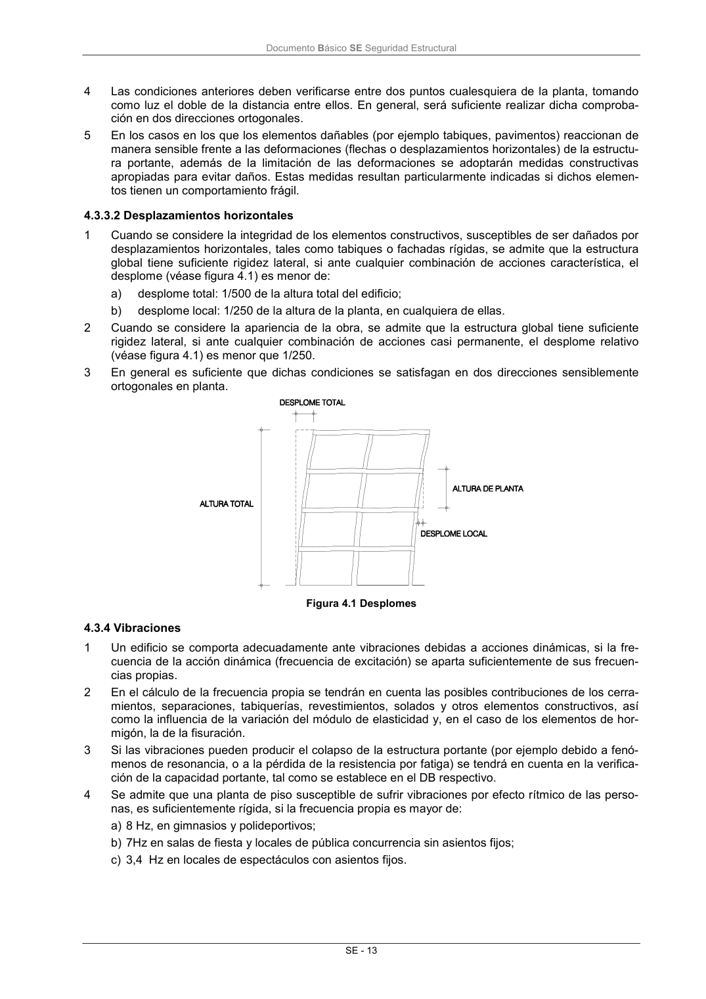

DB-SE · 4.3.3.2 Desplazamientos horizontales · versión 2019-12-20 · capa oficial
Formatos: JSON compacto · Markdown · PDF fuente
Ámbito del documento · texto del ámbito · documento y tablas
ID técnico a0051 · PDF pág. 19 · jerarquía no validada por persona · contrastado con el literal de la página 19 (candidato tipográfico); no validado por persona · padre: raíz
4.3.3.2 Desplazamientos horizontales 1 Cuando se considere la integridad de los elementos constructivos, susceptibles de ser dañados por desplazamientos horizontales, tales como tabiques o fachadas rígidas, se admite que la estructura global tiene suficiente rigidez lateral, si ante cualquier combinación de acciones característica, el desplome (véase figura 4.1) es menor de: a) desplome total: 1/500 de la altura total del edificio; b) desplome local: 1/250 de la altura de la planta, en cualquiera de ellas. 2 Cuando se considere la apariencia de la obra, se admite que la estructura global tiene suficiente rigidez lateral, si ante cualquier combinación de acciones casi permanente, el desplome relativo (véase figura 4.1) es menor que 1/250. 3 En general es suficiente que dichas condiciones se satisfagan en dos direcciones sensiblemente ortogonales en planta. Figura 4.1 Desplomes

PDF fuente redistribuible: copia fiel enlazada en esta página (SHA256 verificado).